Glossary
GlossaryWords from the game and chat — in plain English
Didn't get a word in the alliance chat or in a guide — find it here. Start typing and only matching words will remain. In small gray type — other names players often use for the same thing.
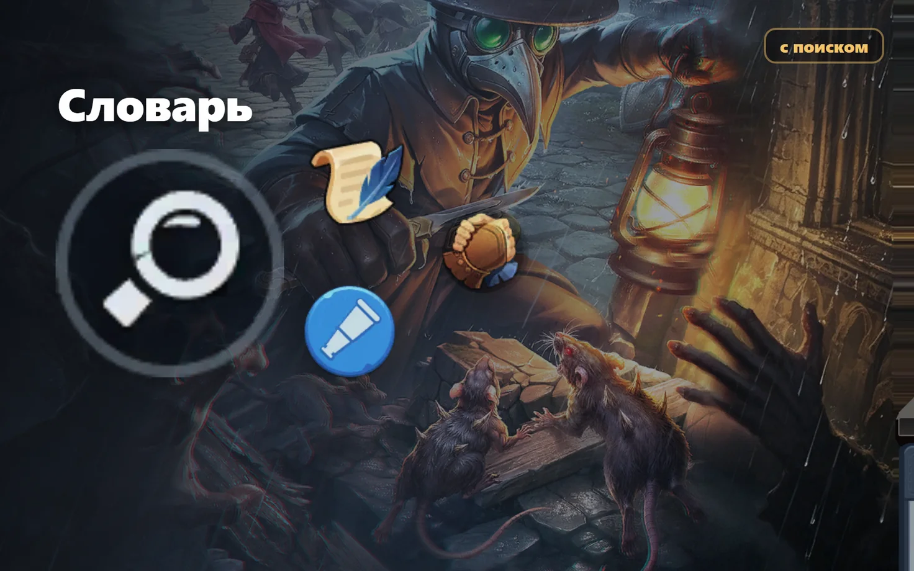
Basics
City, time, account strength
 Sanctuary HQ
Sanctuary HQ- The main building of the city. No building can be higher than the Sanctuary, and it sets how far you can level your heroes. Upgrade it first.
 Kingdom server
Kingdom server- A separate game world with its own number. Ours is 397. A yellow bar with a number at the top of the screen means you are in another kingdom right now.
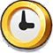
Server time game time- The clock all events run on. Server time is 5 hours behind Moscow: when it is 17:00 in Moscow, it is 12:00 on the server. A new game day starts at 00:00 server time, which is 05:00 Moscow. Both clocks are at the top of every page of the site.
 Might Power
Might Power- Account strength as one number. It adds up buildings, research, heroes, troops, Survivors and the Raven. High Might doesn't mean a strong army yet: buildings inflate the number a lot.
 Stamina energy
Stamina energy- Spent on attacking Blight and other monsters. Every day there are 2 free flasks of 50 Stamina — if you don't drink them, they burn. You can drink above the maximum.
 Shield bubble
Shield bubble- Protects the city from attacks and scouting. It doesn't protect squads outside the city. It drops if you attack someone yourself. It doesn't work in the Kingdom War battle zone.
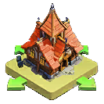
Relocate teleport, «tp»- Moving your city to another place on the map. A targeted relocate — to the spot you choose. «Alliance Relocate» — to the Alliance Assembly Point.
 Speedups speed-ups
Speedups speed-ups- Cut the time of building, research, troop training or healing. Universal ones fit everything. Spend them on the right Duel day — they give points.
 Infirmary hospital
Infirmary hospital- Badly wounded troops go here. If the Infirmary is full, new wounded die right away. Heal on time.
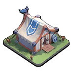
Barracks and Training Grounds- Buildings for troops. Troops are trained in the Training Grounds and housed in the Barracks. The higher the level, the more troops and the stronger their type.
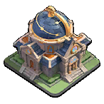
Lab Research- The building for research — permanent bonuses. Most Sanctuary upgrades need it, so upgrade it together with the Sanctuary.
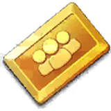
Survivors- Residents you hire in the Tavern and put to work in buildings: more output, capacity, speed.
Heroes and squads
Heroes, rarity, factions
 Rarity: UR, SSR, SR
Rarity: UR, SSR, SR- How valuable a hero or item is. UR — gold, the best. SSR — purple. SR — blue. MR — a gold item brought to 5 stars.
 CMD leadership
CMD leadership- A hero's number: how many troops they lead into battle. It grows with the hero's level. More CMD — more troops in the squad.
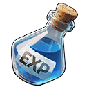
Antitoxin- The resource for leveling up heroes. Made in the Antitoxin Workshop, also given for building, the Falcon, caravans and Covert Operations. Save it and spend on Thursday (hero day in the Duel).
 Hero shards Shards
Hero shards Shards- Pieces of a hero. Collect the required number — get the hero or a new star. Universal shards fit any hero of their rarity. Spend on Thursday.
 Awaken Awakening
Awaken Awakening- The next step after 10 stars for some gold heroes (Marlena, Cynthia, Annie, Arthur): more stats and skill levels.
 Squad
Squad- 5 heroes with troops: 2 in front, 3 behind. You can have up to 4 squads. Details — Squads.
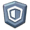
Tank- A hero with lots of HP and defense: stands in front and takes the hits (Arthur, Bella, Shadow).
 DPS, attacker damage dealer
DPS, attacker damage dealer- A hero who deals the main damage (Marlena, Cynthia, Grenwald). Stands behind.
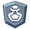
Support- A hero who buffs allies and weakens enemies (Harper, Stellar, Celia). Stands behind.
 Faction
Faction- Each hero has one of three: Warriors, Rangers, Warlocks. If a squad has heroes of one faction, it gets a bonus: 3 heroes — +5%, 4 — +15%, all 5 — +20%.
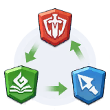
«Counters», «strong against»- Said when one faction is stronger than another. Warrior beats Ranger, Ranger beats Warlock, Warlock beats Warrior. «Stronger» means: takes 20% less damage from it — that is what the Arena hint in the game says.
 Gear
Gear- A hero's 4 items: sword, armor, gauntlets, boots. Gold — against players, purple — against monsters. Details — Gear.
 Skill Badges
Skill Badges- The resource for leveling heroes' skills. Always short — give them to your main attacking hero.
 Recruit, Tavern
Recruit, Tavern- Here recruit tickets give heroes and their shards. Arthur is guaranteed within the first 50 recruits.
Battle and map
Attacks, monsters, map
- Rally
- A joint attack. One player starts a rally on a target, others tap «Join» and send their squads. When the timer runs out everyone hits together in one strike.
 Garrison
Garrison- A squad stationed inside a building (a tower, the Royal City) that defends it. In Kingdom War a garrison earns personal points.
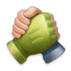
Reinforcement reinforce- Your squad sent to an ally's city to help them defend.
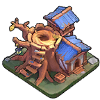
Scout- See what the target has: squads, troops, resources. Scouting before hitting the Demon King triggers «War Frenzy» — a small damage bonus.
 Resource tile node
Resource tile node- A spot on the map with Grain, Timber or Herb. Send a squad there — it gathers and brings it home. Courtesy rule: first come, first served.
 Blight
Blight- Monsters on the map. Regular Blight — hit one at a time, costs Stamina. Guard Blight (elite) — stronger, hit with a rally. Wandering Blight roams the map.
 Demon King
Demon King- A world boss. 10 hits a day except Sunday, doesn't hit back. The reward is for your best single hit. Details — Events.
 Kingdom War KvK
Kingdom War KvK- Our kingdom against another. All week we collect points, on Saturday — the battle for the Royal City. Details — Kingdom War.
 Royal City throne
Royal City throne- The city in the center of the map. Whoever holds it is the king of the kingdom. Around it are 4 towers: each captured one helps take the city.
 Royal City Scramble
Royal City Scramble- The battle for the Royal City. It happens inside the kingdom (alliances against alliances) and on Kingdom War Saturday (kingdom against kingdom). It is also the name of a tab in the Kingdom War window.
 War Frenzy
War Frenzy- The state after your attack or scouting: the shield is off and you can't turn on a new one for a while.
 March Marching
March Marching- A squad moving across the map: to gather, to a monster, to attack. As many squads as you have — that many marches at once.
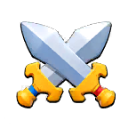
«Zeroed»- A player has lost almost all of their troops.
Alliance and events
Alliance, caravans, events
 R1–R5 alliance ranks
R1–R5 alliance ranks- R5 — the leader. R4 — officers: they set the Assembly Point, assign the caravan Coachman, start alliance events. R1–R3 — members.
 Alliance
Alliance- A clan. Helps speed up building, gives gifts, its own shop and shared events. Join on your very first day.
- Alliance Assembly Point
- A marker set by R4/R5. With «Alliance Relocate» everyone jumps to it.
 Caravan
Caravan- A cart with rewards that travels for 4–5 hours. Other players' carts can be plundered (4 successful times a day). We don't plunder our kingdom 397 — the checkbox.
 Coachman
Coachman- The player who leads the alliance caravan. Assigned by R4/R5. The game picks wagon Passengers at random.
 Covert Operation Covert Op
Covert Operation Covert Op- A timed quest for heroes. Others' can be plundered 5 times a day, allies helped 5 times a day. We don't plunder our own kingdom.
 Falcon Quests
Falcon Quests- Short quests from the Falcon Tower. You don't have to hand them in right away — save them and hand them in on the Duel day that gives points for them.
 Alliance Duel
Alliance Duel- Our alliance against another all week: each day has its own theme. Details — Duel.
 «Holding the hammer»
«Holding the hammer»- Construction has finished, but you don't tap the hammer above the building until the right Duel day. Points are given for the tap, not for the end of construction.
 Survival Battle
Survival Battle- Every day: a new theme every 4 hours (Raven, heroes, building, troops, research). You compete with 12–20 players of about your level.
 Special Events
Special Events- The button at the top right of the screen: Elixir Scramble, Thief Hunt and others. All events — Events.
 Fame Medals
Fame Medals- A war reward. Buy gear blueprints in their shop.
- Minister, title
- A post from the kingdom's king with a bonus to building, research or training. It only works for things started after you got the title.
- NAP non-aggression pact
- An agreement between alliances not to attack each other.
Raven and items
Raven, items, slang
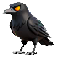
Raven- A pet that boosts all your heroes at once. Leveled with Raven Fruit and Raven Essence. Details — Raven.
 Epigraphs
Epigraphs- Raven inserts that boost a squad of one faction. A Warrior Epigraph works only for a Warrior squad.
 Raven Fruit
Raven Fruit- Grapes on the icon. Raises the Raven's level. Spend on Monday.
 Raven Essence
Raven Essence- A little bottle on the icon. Needed for the Raven's Key Upgrade every 10 levels.
 Blueprint
Blueprint- Needed for stars on gold gear.
 Diamonds
Diamonds- The main paid currency. Also given for free — for events and quests.
 Roulette
Roulette- An event where you can win gold heroes (in the first weeks of the server — Cynthia, later Jester and Annie).
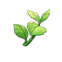
Herb, Grain, Timber- The basic resources. Herb is the main shortage: gear is made with it.
 F2P free-to-play
F2P free-to-play- A player who doesn't pay money in the game.
- «Whale» spender
- A player who pays a lot.
- «Farm»
- A player's second account that only gathers resources for the main one.
- PvE and PvP
- PvE — fights with monsters. PvP — fights with real players (cities, arena, Kingdom War).
 Arena
Arena- Battles against other players' squads. Troops don't die. Squad 1 is your arena defense.